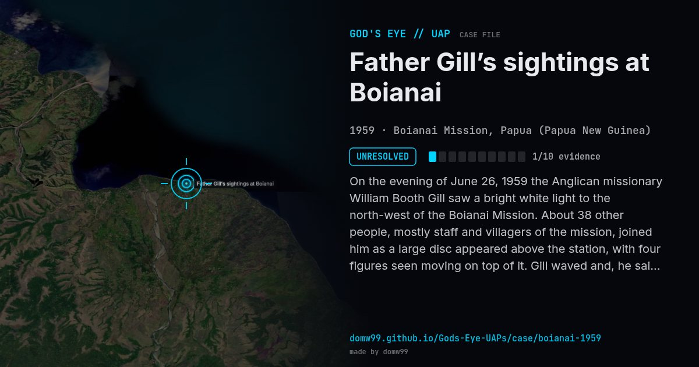

Father Gill’s sightings at Boianai

On the evening of June 26, 1959 the Anglican missionary William Booth Gill saw a bright white light to the north-west of the Boianai Mission. About 38 other people, mostly staff and villagers of the mission, joined him as a large disc appeared above the station, with four figures seen moving on top of it. Gill waved and, he said, the figures waved back. The sightings continued the next night. Gill wrote a report signed by 25 witnesses, and the case was studied by the Royal Australian Air Force and by J. Allen Hynek, who counted it among the best close encounters of the third kind of its time.
Explanation
Sceptics, among them Donald Menzel, identified the first bright light as Venus and later lights as other celestial objects. Several witnesses and Gill’s own written report, signed by 25 of them, describe more than a distant light.
What was seen
Shape: Disc with figures on top; bright lights
Witnesses: Rev. William Booth Gill and some 38 others, most of them villagers
Duration: Hours, over two nights